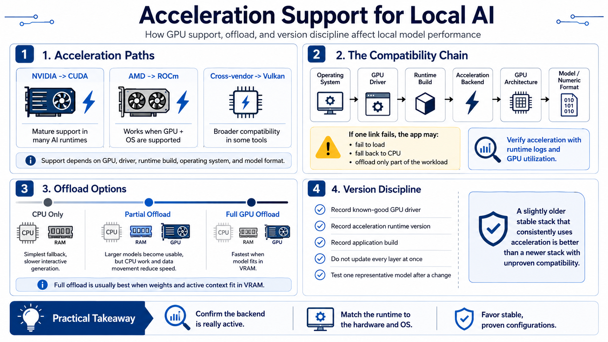

Drivers and Acceleration
Connecting to LMS... Progress: in progress

Narration
Acceleration support determines whether local AI feels interactive or merely possible. NVIDIA hardware commonly uses CUDA, a mature compute platform supported by many AI runtimes. AMD workflows may use ROCm where the operating system and GPU are supported, while Vulkan backends can provide broader cross-vendor acceleration for compatible tools. Support varies by model, driver, runtime build, and operating system, so a GPU brand alone does not guarantee a working path.
Think of the stack as a chain. The operating system recognizes the GPU through its driver. The runtime must be compiled for a compatible acceleration backend. That backend must support the GPU architecture and the numerical formats used by the model. If any link is incompatible, the application may fail to load, silently run on the CPU, or offload only part of the workload. Confirm acceleration through runtime logs and GPU utilization rather than assuming that installation success means the GPU is active.
GPU offload places model layers or operations on the graphics processor while retaining the remainder in system memory and on the CPU. Full offload is usually faster when the model fits in VRAM. Partial offload can make a larger model usable, but data movement and CPU computation reduce speed. CPU-only inference remains a valuable fallback for troubleshooting, embeddings, and smaller models, though interactive generation is typically slower.
Version discipline matters. Record the known-good GPU driver, acceleration runtime, and application build. Do not update every layer at once. When a change is necessary, verify one representative model before modifying the rest of the environment. A slightly older stable stack that consistently uses acceleration is more useful than a newer combination whose compatibility has not been proven.